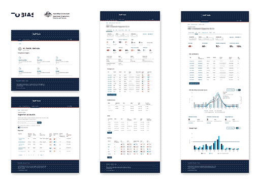
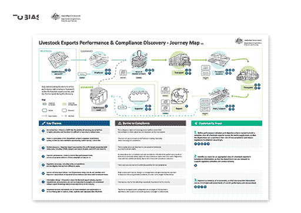

Lumiant
Experience Designer / 2019 - 2021

How do you build an entirely new fintech venture in less than a year? Our team designed Lumiant, a financial advice platform built around a simple idea: financial planning should start with what matters to people, not just their money.
ChallengeTraditional financial advice can feel technical and transactional. Lumiant wanted to help advisers have more meaningful conversations with clients and connect financial strategies to their personal values and life goals.
The challenge was turning that idea into a distinctive brand, a usable digital product and a cohesive experience within a tight launch timeframe.

ApproachAs part of the Tobias team, I worked across product, brand and communications design, helping translate the venture's concept into tangible experiences.
On the product side, I designed finance dashboards and reporting concepts, exploring how financial information could be presented clearly and connected to clients' broader goals. I also developed website concepts to help communicate the proposition and introduce the service to prospective clients and advisers.
Beyond the digital product, I worked on Lumiant's brand identity, including logo design and brand guidelines. I created marketing and advertising collateral to keep the visual language consistent across different touchpoints, and contributed to promotional video production and motion design.
Working across these disciplines meant thinking about the experience as a whole. The product, brand and marketing all needed to tell the same story: this was a different kind of financial advice, centred on people and the lives they wanted to lead.
OutcomeLumiant launched within nine months, bringing together a values-centred advice proposition, digital tools and a cohesive brand experience. Product design doesn't stop at the interface. When the product, brand and story work together, they make a new idea easier to understand, trust and, ultimately, adopt.
The project was awarded a 2021 Good Design Award Gold Winner for Commercial Services ↗.
Further reading at Tobias Australia ↗.
Securing Australian Export Growth Through Intelligent Regulation →
Department of Agriculture, Fisheries and Forestry
Interaction Designer / Sep 2021 - Jun 2025
Simplifying the Cross-Border Trade Experience for Businesses to Strengthen the Australian Economy →
Simplified Trade System Implementation Taskforce (Austrade)
Experience Designer / Sep 2021 - Mar 2022
A Human-Centred Approach to Owning the US$5 Billion Tattoo Removal Market →
Removery
Experience Designer / 2019 - 2021